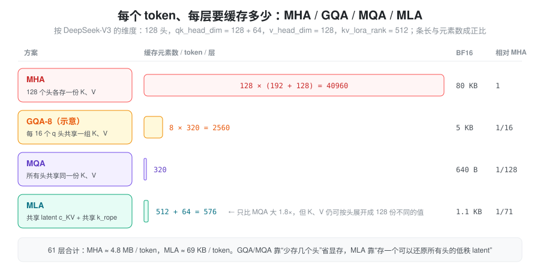
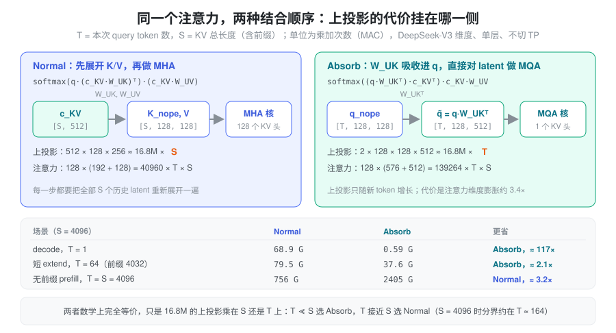
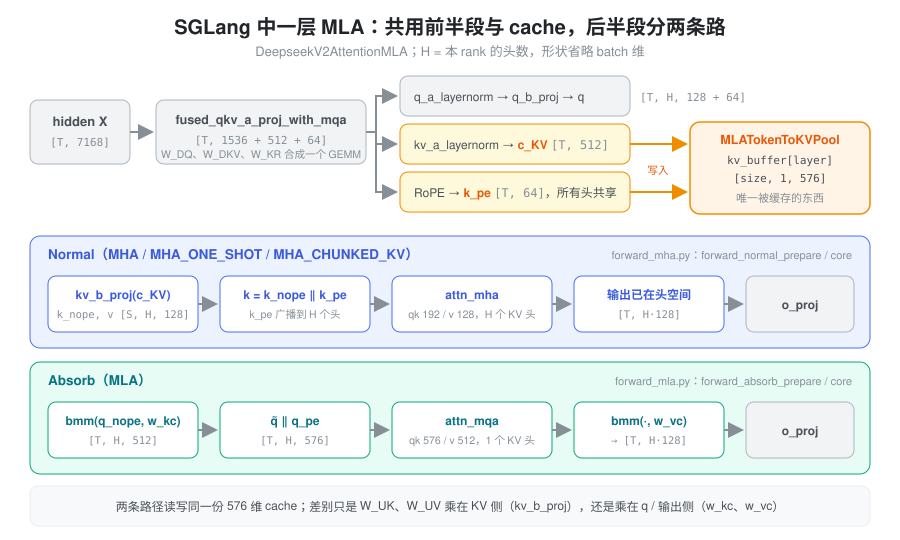

问题：KV cache 成了推理的瓶颈
自回归推理时，每生成一个 token 都要和全部历史 token 做注意力，所以历史的 K、V 必须缓存下来。MHA 里每个头都有自己的 K、V，按 DeepSeek-V3 的维度（128 个头，K 192 维、V 128 维）算，一个 token 在一层里就要存 40960 个元素，61 层合计约 4.8 MB。KV cache 的大小直接决定了一张卡能同时服务多少请求、能支持多长的上下文；而 decode 阶段每一步都要把这些 cache 从显存完整读一遍，它又决定了 decode 的速度。
MQA、GQA 的办法是减少 KV 头的数量：让多个 query 头共用一组 K、V，cache 立刻缩小几倍到上百倍。代价也很直接——K、V 的表达能力跟着头数一起被砍掉了，模型效果会打折扣。
于是问题变成：能不能只缓存很少的东西，却仍然让每个头看到各不相同的 K、V？
核心思想：缓存一个能还原所有头的 latent
MLA（Multi-head Latent Attention）的回答来自 LoRA 式的低秩分解。传统注意力直接用 W_{Q}、W_{K}、W_{V} 从输入 X 得到 Q、K、V：
Q = X W_{Q} \quad K = X W_{K} \quad V = X W_{V}
MLA 在中间插入一个“先压缩、再展开”的步骤：
c_{Q} = X W_{DQ} \qquad Q = c_{Q} W_{UQ}
c_{KV} = X W_{DKV} \qquad K = c_{KV} W_{UK} \qquad V = c_{KV} W_{UV}
D 表示 down（压缩），U 表示 up（展开）。压缩后的低维张量叫 latent：c_{KV} 只有 512 维，却能通过 W_{UK}、W_{UV} 展开成 128 个头各不相同的 K、V。
关键在于缓存什么。展开后的 K、V 完全由 c_{KV} 决定，所以只需要缓存 c_{KV} 本身，需要时再展开。GQA/MQA 是“少存几个头”，MLA 是“存一个可以还原所有头的低秩表示”：

图里 MLA 的 576 比 512 多出来的 64 维是 RoPE 部分，原因见后文的 RoPE 一节。先忽略 RoPE，看看“只存 latent”之后注意力怎么算。
同一个注意力，两种算法：Normal 与 Absorb
Normal：先展开，再做 MHA
最直接的做法是把 cache 里的 c_{KV} 展开成每个头的
K、V，然后照常做 MHA。下面用 W_{qb} 表示 W_{UQ}，W_{kb}、W_{vb} 分别表示 W_{UK}、W_{UV}（合起来就是代码里的
kv_b_proj）：
\begin{aligned} \text{MHA 路径} &= \text{softmax}\left( \frac{QK^{T}}{\sqrt{k}} \right) V \\ &= \text{softmax}\left( \frac{c_{q} W_{qb} (c_{KV} W_{kb})^T}{\sqrt{k}} \right) (c_{KV} W_{vb}) \end{aligned}
这条路径叫 Normal 模式。它在效果上就是 MHA，cache 也确实只存了 latent。问题是每次计算都要把全部 S 个历史 token 的 latent 重新展开一遍，展开的代价随 KV 长度 S 增长。
Absorb：把上投影吸收到 q 和输出上
矩阵乘法满足结合律，可以换一个结合顺序：
\begin{aligned} \text{MQA 路径} &= \text{softmax}\left( \frac{QK^{T}}{\sqrt{k}} \right) V \\ &= \text{softmax}\left( \frac{c_{q} W_{qb} (c_{KV} W_{kb})^T}{\sqrt{k}} \right) c_{KV} W_{vb} \\ &= (\text{softmax}\left( \frac{(c_{q} W_{qb} W_{kb}^T) c_{KV}^T}{\sqrt{k}} \right) c_{KV}) W_{vb} \end{aligned}
最后一行里，W_{kb} 被“吸收”进了 query：先算 \tilde{q} = c_{q} W_{qb} W_{kb}^{T}（每个头一个 512 维向量），再直接和 c_{KV} 做点积；W_{vb} 则挪到注意力之后，先对 latent 做加权求和，再展开到每个头。
这时所有头的 K 和 V 都是同一份 c_{KV}——这正是 MQA 的形状：128 个 query 头，1 个 KV 头。这条路径叫 Absorb 模式。它数学上与 Normal 完全等价，却只需要把上投影乘在 T 个新 token 上，而不是 S 个历史 token 上。
谁更省：看 T 和 S 的比例
两种模式交换的是两笔开销：
- 上投影：Normal 每层要做 S\times 512\times 128\times 256 次乘加来展开 K、V；Absorb 换成 T\times 2\times 128\times 128\times 512 次来吸收 q、展开输出。两者系数都约是 16.8M，区别只是乘 S 还是乘 T。
- 注意力本身：Normal 每个头的 qk 是 192 维、v 是 128 维；Absorb 每个头的 qk 是 576 维、v 是 512 维，注意力的计算量膨胀约 (576+512)/(192+128)\approx 3.4 倍。

于是有了推理里的分工：
- decode（T=1\ll S）：Absorb 碾压。而且 decode 本来就是访存瓶颈，Absorb 每从显存读一行 576 维的 latent，就被 128 个 query 头复用一次，算术强度远高于 MHA 的 decode；
- 无前缀的 prefill（T=S）：上投影两边一样多，Absorb 只剩下注意力膨胀的劣势，Normal 胜出。所以 prefill 时 MLA 就是一个“多此一举的 MHA”——先压缩再展开，但不吃亏；
- 带前缀的 extend：介于两者之间，取决于这一轮的 T 有多大。当 S 较大时分界线约在 T\approx 16.8\text{M}/(139264-40960)\approx 170，几乎与 S 无关。
RoPE 为什么要单独拆出来
上面的推导有个前提：Q 和 K 之间只隔着与位置无关的矩阵。RoPE 打破了这个前提。给 query 位置 i、key 位置 j 加上旋转矩阵 R_i、R_j 之后：
q_i^{T} k_j = (R_i\, q_i)^{T} (R_j\, W_{UK}^{T} c_j) = q_i^{T}\, R_{j-i}\, W_{UK}^{T}\, c_j
W_{UK} 和 query 之间夹了一个随 j-i 变化的旋转矩阵，没法再预先把 W_{UK} 吸收进 q；要算这一项，就只能对每个历史 token 展开 K，Absorb 的意义就没了。
DeepSeek 的解法叫 decoupled RoPE：把每个头的 q、k 拆成两段——
- nope 段（128 维）：不加位置编码，走上面的 latent 路径，可以吸收；
- rope 段（64 维）：单独承载位置信息。query 侧每个头一份，由 c_Q 经 W_{QR} 得到；key 侧所有头共享一份，由 X 经 W_{KR} 直接得到，并与 c_{KV} 一起缓存。
两段的点积相加就是完整的注意力分数。这就是 cache 里每个 token 是 512 + 64 = 576 维的原因。DeepSeek-V2 论文中的原始流程图如下：

Normal（MHA）路径的完整数学流程：
c_{Q} = X W_{DQ} Q_{nope} = c_{Q} W_{UQ} Q_{rope} = \text{RoPE}(c_{Q} W_{QR}) c_{KV} = X W_{DKV} K_{nope} = c_{KV} W_{UK} V = c_{KV} W_{UV} K_{rope} = \text{RoPE}(X W_{KR}) Q = \text{Concat}(Q_{nope}, Q_{rope}) K = \text{Concat}(K_{nope}, K_{rope}) \text{MHA} = \text{softmax}(\frac{QK^T}{\sqrt{k}})V
注意 K_{nope} 不加 RoPE，K_{rope} 只有一份，拼接时在所有头之间广播。对应的流程图：

decode 阶段走的 Absorb（MQA）路径只改动 nope 段，rope 段原样保留：
c_{Q} = X W_{DQ} Q_{nope} = c_{Q} W_{UQ} Q_{rope} = \text{RoPE}(c_{Q} W_{QR}) Q = \text{Concat}(Q_{nope} W_{UK}^{T}, Q_{rope}) c_{KV} = X W_{DKV} K_{rope} = \text{RoPE}(X W_{KR}) K = \text{Concat}(c_{KV}, K_{rope}) V = c_{KV} W_{UV} \text{MQA} = \text{softmax}(\frac{QK^T}{\sqrt{k}})V
这里的 K 只有一个头：所有 query 头共享同一个 576 维的 K。最后一行是简写，实际计算时先用 c_{KV}（即 K 的前 512 维）做加权求和，再乘 W_{UV}，与上一节 MQA 路径公式的最后一行一致。缩放因子 \sqrt{k} 仍按原始的 192 维计算，因为吸收不改变点积的值。对应的流程图：

计算量分析
用 T 表示 q_len，S 表示 kv_len（含前缀），单位为乘加次数，单层、不切 TP：
\begin{aligned} &\text{两条路径共有的部分} \\ &\quad \text{flops\_q\_a\_and\_kv\_a}: \quad T \times 7168 \times (1536 + 512 + 64) \\ &\quad \text{flops\_qb}: \quad T \times 1536 \times 128 \times 192 \\ &\quad \text{flops\_oproj}: \quad T \times 128 \times 128 \times 7168 \\ \\ &\text{Normal（MHA）路径} \\ &\quad \text{flops\_kb}: \quad S \times 512 \times 128 \times 128 \\ &\quad \text{flops\_vb}: \quad S \times 512 \times 128 \times 128 \\ &\quad \text{flops\_mha}: \quad 128 \times (T \times S \times 192 + T \times S \times 128) \\ \\ &\text{Absorb（MQA）路径} \\ &\quad \text{flops\_absorb\_kb}: \quad T \times 128 \times 128 \times 512 \\ &\quad \text{flops\_absorb\_vb}: \quad T \times 128 \times 512 \times 128 \\ &\quad \text{flops\_mqa}: \quad 128 \times (T \times S \times 576 + T \times S \times 512) \end{aligned}
定性结论：
- prefill 阶段 T = S，两条路径的上投影一样多，Absorb 只多出约 3.4 倍的注意力计算，所以用 Normal；
- decode 阶段 T \ll S，Absorb 的注意力虽然变贵，但省掉了与 S 成正比的 kv_b 展开，所以用 Absorb。
SGLang 中的实现
SGLang 里 DeepSeek V2/V3 的 MLA 层是
DeepseekV2AttentionMLA（srt/models/deepseek_v2.py）。它本身只负责初始化和分派，两条路径的前向分别放在
srt/models/deepseek_common/attention_forward_methods/
下的 mixin 里：forward_mha.py（Normal）和
forward_mla.py（Absorb），另有 ROCm、CPU、NPU
的变体。

代码符号与数学符号的对应
读代码时最容易绕晕的是两套命名。代码按“合并后的 GEMM”命名，数学按“语义”命名，对应关系如下：
| 代码 | 数学 | 说明 |
|---|---|---|
q_lora_rank /
kv_lora_rank |
c_Q / c_{KV} 的维度 | 1536 / 512 |
qk_nope_head_dim /
qk_rope_head_dim / v_head_dim |
nope 段 / rope 段 / v 的每头维度 | 128 / 64 / 128 |
fused_qkv_a_proj_with_mqa |
[W_{DQ}, W_{DKV}, W_{KR}] | 三个 down 投影合成一个 GEMM，输出 1536 + 512 + 64 |
q_b_proj |
[W_{UQ}, W_{QR}] | 每头输出 192 = 128 + 64 |
kv_b_proj |
[W_{UK}, W_{UV}] | 每头输出 256 = 128 + 128，Normal 用 |
w_kc / w_vc |
W_{UK} / W_{UV} | 从 kv_b_proj 拆出来的逐头矩阵，Absorb
用 |
kv_a_layernorm 之后的 latent |
c_{KV} | 缓存的前 512 维 |
k_pe |
k^{rope} | 缓存的后 64 维 |
checkpoint 里 q_a_proj 和
kv_a_proj_with_mqa
仍是两个张量，加载时（deepseek_common/deepseek_weight_loader.py）先各自缓存，两者都到齐后沿输出维
torch.cat 成
fused_qkv_a_proj_with_mqa 的权重。前向时这次
GEMM 的结果按
[q_lora_rank, kv_lora_rank + qk_rope_head_dim]
切开，后一段再切成 c_KV 和
k_pe。V2-Lite 这类
q_lora_rank is None 的模型没有 q 压缩，走
q_proj + kv_a_proj_with_mqa
两个独立投影。
两套权重从一份 checkpoint 而来
Normal 需要 kv_b_proj 这个大 GEMM，Absorb
需要逐头的 w_kc、w_vc 做 batched
matmul。它们是同一份权重的两种视图，在
post_load_weights 里派生：
w_kc, w_vc = w.unflatten(0, (-1, qk_nope_head_dim + v_head_dim)).split(
[qk_nope_head_dim, v_head_dim], dim=1) # 均为 [H, 128, 512]
# 之后 w_vc 转置为 [H, 512, 128]；w_kc 逻辑形状不变，只改成列主序存储Absorb 时
torch.bmm(q_nope.transpose(0, 1), self.w_kc) 把
[H, T, 128] 乘成
[H, T, 512]，注意力之后再用 w_vc
乘回 [T, H·128]。fp8 checkpoint
会在这里先反量化或转成 per-tensor scale，另有
bmm_fp8、DeepGEMM masked grouped GEMM
等变体，但逻辑上都是这两次 bmm。
KV cache：一份 576 维的 latent
MLA 的 cache 由
MLATokenToKVPool（srt/mem_cache/memory_pool.py）管理。与
MHA 的 pool 分别存 K、V 不同，它每层只有一个 buffer，形状是
[size + page_size, 1, kv_lora_rank + qk_rope_head_dim]：中间那个
1 就是“只有一个 KV 头”。写入用
set_mla_kv_buffer(layer, loc, cache_k_nope, cache_k_rope)，把归一化后的
c_KV 和已经加过 RoPE 的
k_pe 拼进同一行；读出用
get_mla_kv_buffer 再拆回两段。索引与分配和其他
pool 完全一样，详见显存池。
两条路径读写的是同一份 cache，这是 Normal / Absorb 能逐
batch 自由切换的前提。在模型里它们对应两个
RadixAttention 实例：
attn_mha：num_kv_heads = H，qk 192 维、v 128 维，调用时save_kv_cache=False，因为 cache 已在 prepare 阶段由模型自己写过；attn_mqa：num_kv_heads = 1，qk 576 维、v 512 维。V 就是 K 的前 512 维，所以调用时 v 传入的正是 k 中的 latent 部分。
这个设计也带来一个副作用：所有头共享同一份 latent，attention TP 无法再按头切分 KV，每个 rank 都持有完整副本，DCP 正是为此沿 token 维度切分 cache。
路径选择：按 batch 决定，而不是按阶段
前面说“prefill 用 Normal、decode 用
Absorb”是一个近似。SGLang 实际上对每个
batch调用
dispatch_attn_forward_method，返回一个
AttnForwardMethod（deepseek_common/attention_forward_methods/forward_methods.py），再由
forward_prepare / forward_core
分派。规则按 attention backend 注册在
deepseek_common/attention_backend_handler.py
中。fa3、flashinfer、flashmla 共用的规则大致是：
| batch 情况 | 结果 |
|---|---|
| decode、投机解码的 verify / draft extend、CUDA graph 中 | MLA（Absorb） |
| 普通 extend，前缀为 0 | MHA_ONE_SHOT；总长度超过单块容量时
MHA_CHUNKED_KV |
普通 extend，前缀 ≥
SGLANG_CHUNKED_PREFIX_CACHE_THRESHOLD（默认
8192） |
同上 |
| 普通 extend，0 < 前缀 < 阈值 | MLA（Absorb） |
三个 MHA 变体都是 Normal，区别在于前缀怎么处理：
MHA：只算本轮新 token 的 KV，用于没有前缀的情况（如 triton backend 下前缀为 0 时）；MHA_ONE_SHOT：把前缀的 latent 从 cache 一次读出，和新 token 一起展开，做一次完整的 MHA；MHA_CHUNKED_KV：前缀分块读出、分块用kv_b_proj展开、分块做注意力，再用merge_state按 LSE 合并，把展开前缀所需的临时显存限制在一个块的大小。
短前缀走 Absorb
是工程上的取舍：为一小段前缀多做一次读出和展开得不偿失，并不是
flops 上的精确分界。不同 backend 的规则也不完全相同，例如
triton 只在前缀为 0 时走
MHA，trtllm_mla 在 extend 时倾向
MHA_CHUNKED_KV。
一个容易踩的细节：k_pe 的广播
Normal 路径里 k_pe 只有一份，而
attn_mha 要的是每个头一份完整的 192 维
K。_concat_and_cast_mha_k 负责把
k_nope [S, H, 128] 和广播后的
k_pe [S, 1, 64] 拼成
[S, H, 192]，并按需转成 fp8；对常见的 128 头 /
128 / 64 维组合有专门的 concat_mla_k CUDA
kernel。Absorb 路径则完全没有这一步，q_pe 和
k_pe 直接拼在 576 维的末尾——这也是 Absorb 在
decode 上更轻的原因之一。
shape 速查
以 DeepSeek-V3 为例，T 为 q_len，S 为 kv_len，均省略 batch 维：
- X：
[T, hidden_size]，即[T, 7168] - c_{Q}：
[T, q_lora_rank]，即[T, 1536] - c_{KV}：
[S, kv_lora_rank]，即[S, 512]；k^{rope}：[S, 64] - W_{DQ}：
[7168, 1536]；W_{DKV}：[7168, 512]；W_{KR}：[7168, 64] - W_{UQ}：
[1536, 128 heads, 128]；W_{QR}：[1536, 128 heads, 64] - W_{UK}：
[512, 128 heads, 128]；W_{UV}：[512, 128 heads, 128] - Absorb 中的 \tilde{q}：
[T, 128 heads, 512 + 64]；注意力输出：[T, 128 heads, 512]
小结
MLA 的价值在于把“缓存多少”和“每个头看到什么”拆开了：cache
里只存一个 576 维的低秩 latent，体积接近 MQA；而通过 W_{UK}、W_{UV}
的展开，每个头仍然拥有不同的 K、V，表达能力接近
MHA。矩阵乘法的结合律让同一个注意力有两种算法：Normal
把上投影乘在 KV 侧，适合 T\approx
S 的 prefill；Absorb 把上投影吸收进 q 和输出，适合
T\ll S 的 decode。decoupled
RoPE 则让位置编码绕开 latent，保住了吸收的可能。SGLang
把这些落实为一份共享的 MLATokenToKVPool、两套由
kv_b_proj 派生的权重视图，以及按 batch
选择路径的 AttnForwardMethod 分派。